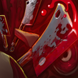

Dismember
CHANNELED - Pudge chows down on an enemy unit, disabling it and dealing damage over time. Damage is increased by
Pudge's Strength and heals him for the total amount. Pudge pulls the unit at a rate of 75 units, up to a minimum
of 125 range. Lasts longer on creeps.
